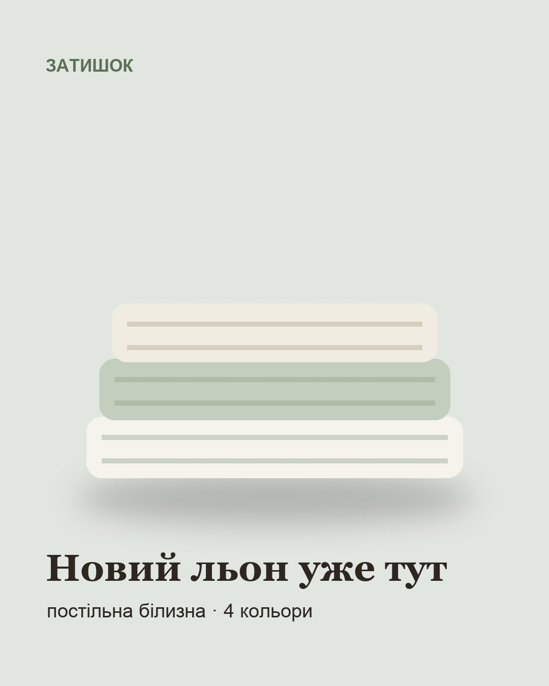
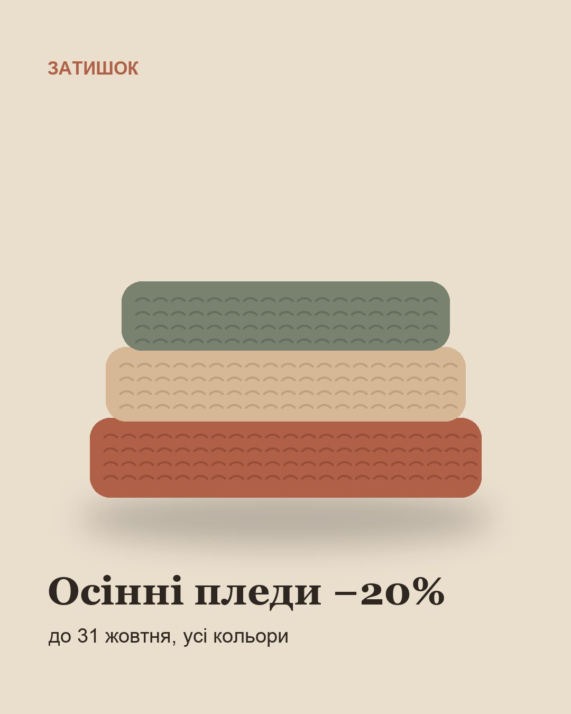
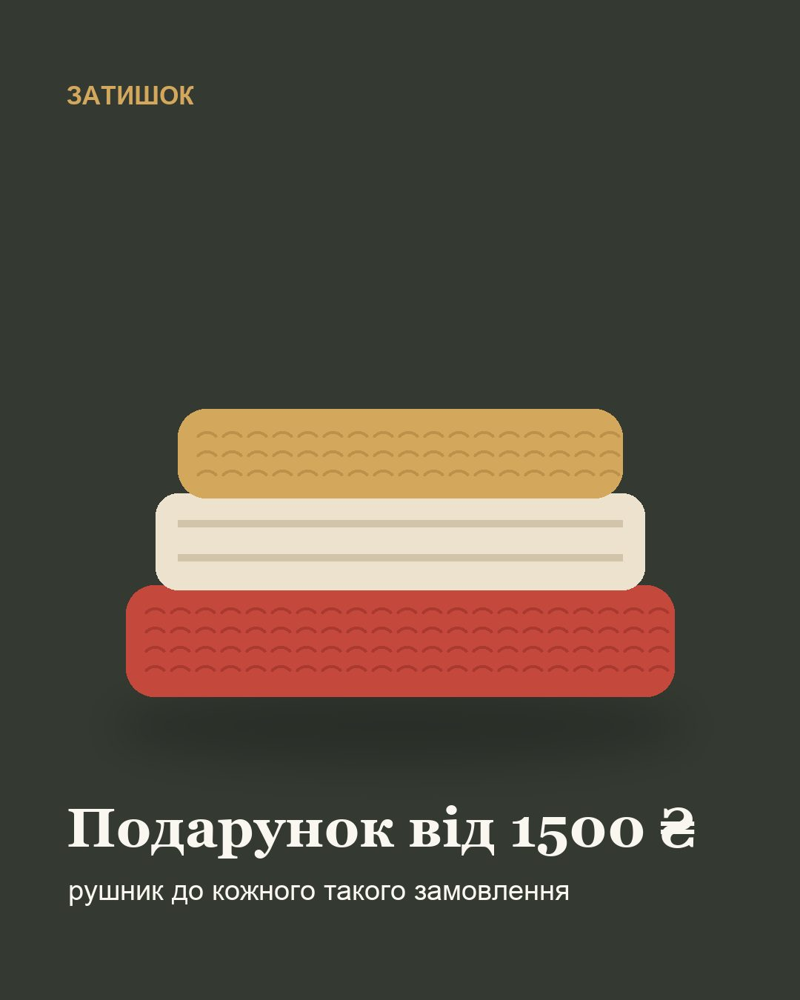
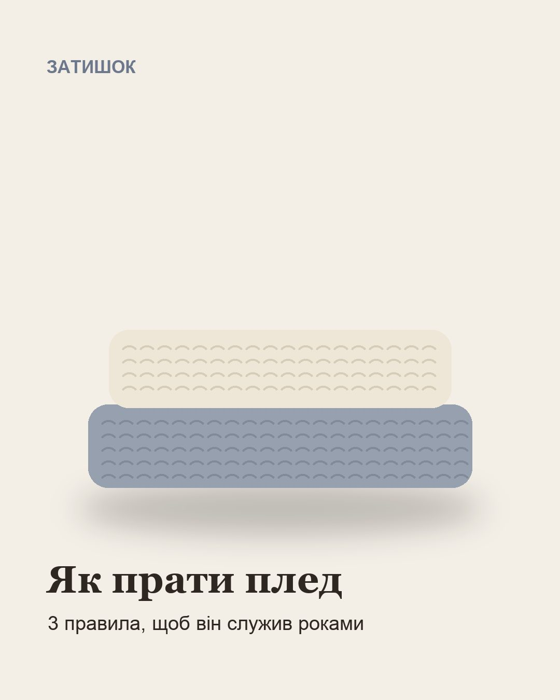

Статистика
Оновлено сьогодні о 02:1430 днівпопередні 30 днівОстанні дні ще доповнюються
Найкращі публікації
- 2 5211365,4 %

Нова колекція льону вже на складі: чотири кольори, усі розміри від півтораспального до євро. Льон із кожним пранням стає мʼякшим 🤍
Facebook· 4 лист.· Схожий пост
2 521 переглядів · 136 взаємодій · ER 5,4 %
- 2 4061194,9 %

Осінь уже тут, а з нею й наші пледи −20% 🍂 Усі кольори й розміри, до 31 жовтня. Пишіть у Direct, підберемо ваш.
Facebook· 1 лист.· Схожий пост
2 406 переглядів · 119 взаємодій · ER 4,9 %
- 2 4251164,8 %

Відгук: «спимо як у готелі»
Facebook· 13 жовт.· Схожий пост
2 425 переглядів · 116 взаємодій · ER 4,8 %
- 1 8931146,0 %
- 1 053625,9 %

Три правила, щоб плед служив роками: 1. 30 °C і делікатний режим. 2. Без відбілювача й кондиціонера з силіконом. 3. Сушити розкладеним, не на батареї. Збережіть, щоб не загубити 🧺
Facebook· 29 жовт.· Схожий пост
1 053 переглядів · 62 взаємодій · ER 5,9 %
Підписники
- Затишок · домашній текстиль2 309+59
Найкращий час для публікацій
Найбільше відгуку: сб 18:00, сб 20:00, чт 21:00 (за київським часом, на основі 139 публікацій).
Формати
Середня залученість за типом поста
- Фото3 публ.5,4 %
- Карусель2 публ.5,4 %